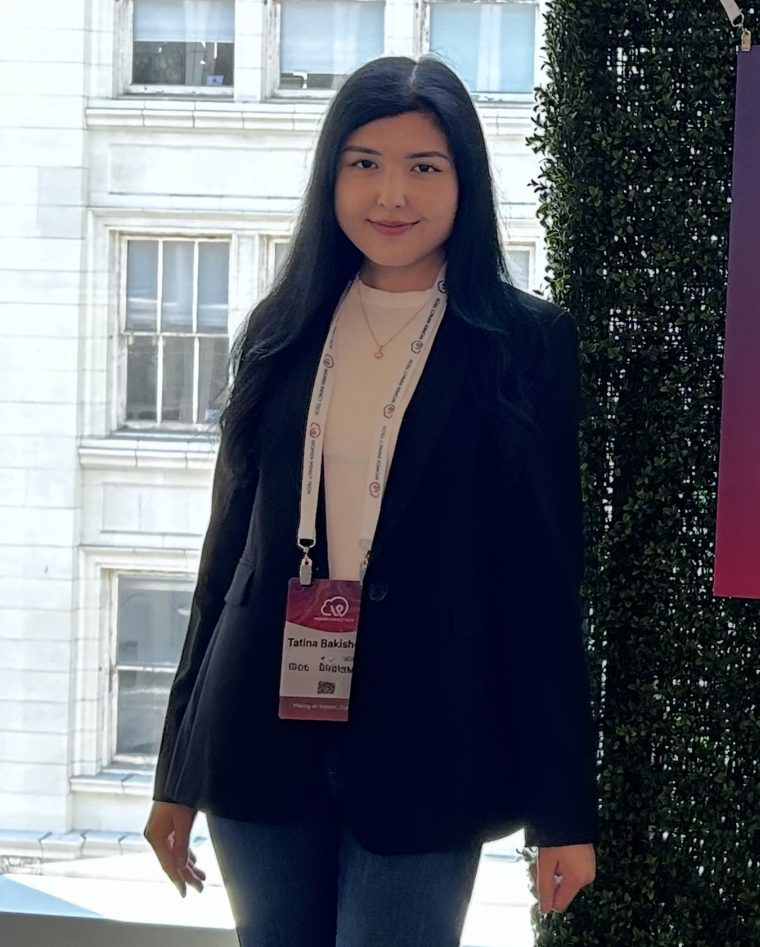

I own and operate the production EKS platform at Sprout Social — Terraform, GitOps, and observability — and I work AI-first, with the guardrails to do it safely against production.

tatina@platformThree from the platform team at Sprout Social — the platform itself, its security model, and the AI tooling I run on top of it.
Every incident used to start with 20–30 minutes of the same manual work — checking pod status, describing resources, hunting for the right logs, reading through Kubernetes events before anyone could even start on root cause.
I built an AI-assisted diagnostic workflow that automates that first pass: it analyzes pod health, cluster events, and centralized logs, then generates a triage summary. Initial triage dropped from 20–30 minutes to 5–10, and it shortcuts root-cause on ~60–70% of recurring issues — CrashLoopBackOff, failed deploys, application errors.
I own and operate the production EKS platform that 8–10 engineering teams run 100+ workloads on — clusters, autoscaling node groups, networking, and IAM, all provisioned with Terraform.
Security is built into the platform, not bolted on. Instead of node-wide IAM roles or AWS credentials stored as secrets, each workload binds to its own IRSA role scoped to least privilege and enforced with RBAC. If one workload is compromised, the attacker doesn't inherit the node's or another workload's permissions — the blast radius stays contained.
I moved delivery to GitOps with ArgoCD and version-controlled manifests, so every change is a reviewable commit and rollbacks that used to take 15–20 minutes now complete in under 5.
For reliability, I redesigned the Prometheus and Alertmanager rules around SLO-based alerting — cutting false-positive noise significantly so the alerts that page someone are the ones that actually matter, visualized in Grafana.
I'm a Platform Engineer with 5 years building scalable AWS and Kubernetes infrastructure. Right now that's at Sprout Social, where I own and operate the production EKS platform that 8–10 engineering teams run 100+ workloads on — partnering closely with developers to turn deployment and troubleshooting pain into reliable self-service workflows.
Before Sprout I spent three years at AppsFlyer as a DevOps Engineer, building GitHub Actions CI/CD, provisioning AWS with Terraform, and standing up centralized EFK logging that gave the team structured runbooks and faster incident triage. That's where I learned observability and incident response properly.
The last stretch has changed how I work. I run Claude Code as an agent in my repos daily — with custom skills and CLAUDE.md/AGENTS.md context engineering — and I wire MCP servers split by blast radius: read-only for triage, mutating changes gated behind plan review and approval. The interesting problem now isn't whether AI can do infra work; it's building the guardrails so it does it safely. That's a platform problem — and platform problems are what I like.
Tools I've run in production and can talk through end to end.
Particularly teams in fintech and infrastructure — or anyone taking AI adoption in engineering seriously enough to build guardrails for it. Chicago or remote.